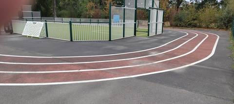
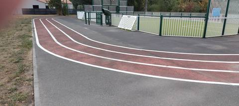
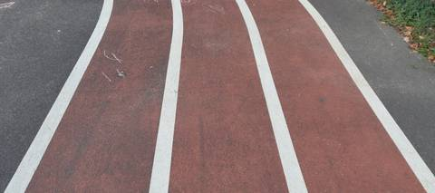

{kind=link}
{kind=link}
{kind=link}
Aucun agrès visible : c'est juste une petite piste pour les enfants. Et c'est du goudron, pas du tartan — la couleur rouge trompe, mais au sol c'est bien de l'enrobé. Clairement une aire de jeux de quartier : les enfants font leur coloriage à la craie dessus. Au mieux on peut y organiser une course entre enfants, mais c'est complètement inexploitable pour un adulte. Le nom de « complexe sportif » induit en erreur : ce n'est pas une piste bis. Pour s'entraîner à Saint-Philbert-de-Grand-Lieu, il faut aller à l'autre piste, celle des Chevrets.
Complexe sportif des Grenais
Rue des Aigrettes, 44310 Saint-Philbert-de-Grand-Lieu · Loire-Atlantique
Complexe sportif des Grenais is an athletics venue in Saint-Philbert-de-Grand-Lieu (Loire-Atlantique), Pays de la Loire, France. It has an asphalt / tarmac running track with 3 lanes. Access is free and unrestricted.
Photos



A photo is surely still missing
Jump pits and throwing areas are what public data describes worst, and what gets photographed least. A close-up of the ground, a covered vault pit, a sand box gone to weeds: each adds what no field carries.
Send a photoNo GitHub account?Track
- Surface
- Asphalt / tarmac
- Lanes
- 3
- Setting
- Outdoor
Access & amenities
- Free access
- Yes
Visite du 25 août 2026 : accès libre confirmé, on arrive sur l'anneau sans franchir ni portail ni barrière. Le terrain synthétique que l'anneau ceinture est, lui, entièrement clos par une clôture blanche et verte ; l'anneau court à l'extérieur de cette clôture et reste accessible indépendamment. Un panneau bleu est fixé sur la clôture du city-park — il n'a pas été lu, et son contenu reste à relever : c'est ce qu'il faudra regarder en premier à la prochaine visite.
Athlete reviews
Visite sur place le 25 août 2026. Cette fiche remplace ce qui n'était jusqu'ici qu'une lecture d'orthophoto, et elle la corrige sur le point le plus important. Le revêtement n'est pas du synthétique. L'orthophoto IGN montrait un « anneau rouge » ; au sol, c'est un enrobé pigmenté rouge — un goudron teinté, granulat apparent, dur sous le pied — et non du tartan. Les trois couloirs sont peints en rouge sur la dalle d'enrobé gris qui entoure le terrain, et délimités par des lignes blanches. C'est le cas d'école du piège documenté au § 4.6 de la doc : la couleur vue du ciel ne dit rien du revêtement, et une bande rouge sur une orthophoto n'est pas une piste en synthétique. Trois couloirs, comptés sur place et visibles sur les photos. Le tracé fait le tour d'un city-park clôturé — terrain en gazon synthétique, buts et panier de basket — bordé d'une pelouse d'un côté et de l'aire de service du complexe de l'autre. Aucun agrès d'athlétisme : ni sautoir en longueur, en hauteur ou à la perche, ni aire de lancer, ni rivière de steeple. Le champ « agrès » reste vide. L'usage réel se lit sur le sol : les enfants dessinent à la craie sur les couloirs, et les traces de craie rose sont encore visibles sur le gros plan. C'est une aire de jeux de quartier avec un anneau peint dessus, pas un équipement d'athlétisme — malgré le nom de « complexe sportif », qui prête à confusion. Le développement n'est toujours pas connu. Le site est absent du recensement du ministère **et** d'OpenStreetMap, où aucun tracé ne le représente ; il n'a pas été mesuré sur place et aucune estimation n'est avancée plutôt qu'un chiffre inventé. Une mesure au décamètre en couloir 1, à 30 cm de la corde, reste à faire. À Saint-Philbert-de-Grand-Lieu, la piste sur laquelle on s'entraîne est l'autre : le Complexe Sportif des Chevrets (I441880016), anneau de 250 m en synthétique relevé sur place, à 1,8 km d'ici, avec vestiaires, douches et sanitaires. Les Grenais n'en sont pas une annexe ni une piste bis.
Other venues in the department
- Stade Muriel Hurtis — Complexe des Chevrets
- Espace Yannick Noah
- Complexe Sportif
- Stade Municipal
- Complexe Sportif Hugues Martin
- Piste de La Chevrolière
Report an error or complete this record
Réf. c-complexe-sportif-des-grenais-saint-philbert-de-grand-lieu · Source: Community contribution — Data ES, French ministry for sport, Licence Ouverte 2.0. Records are self-declared and may be incomplete: check access conditions before travelling.